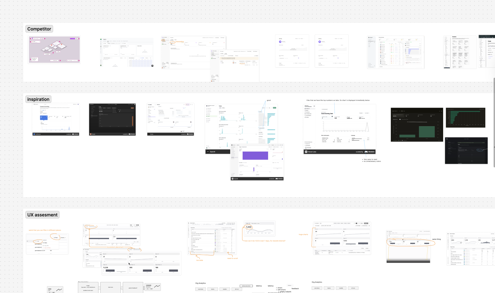
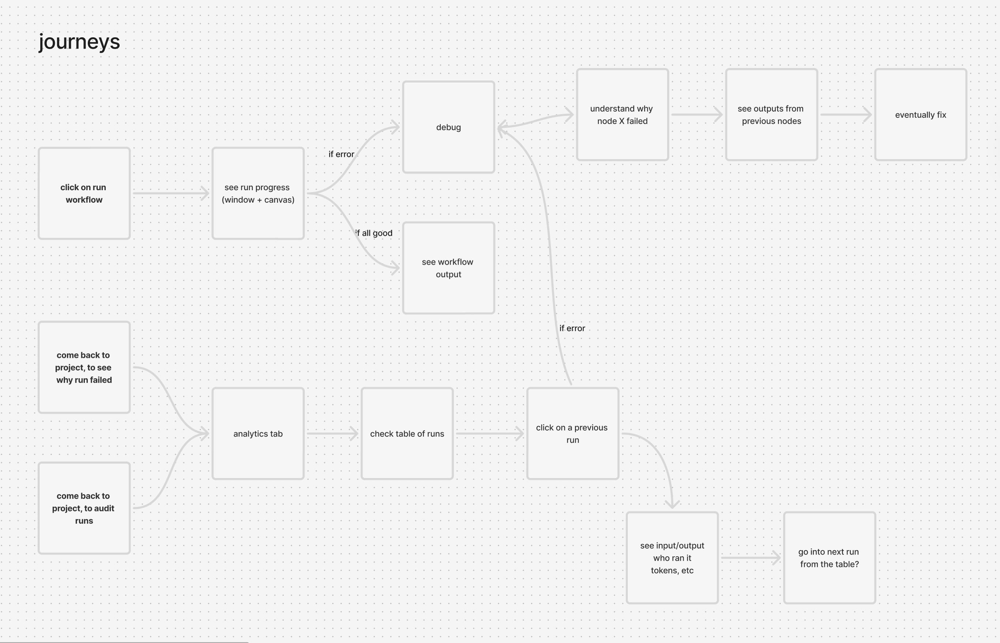
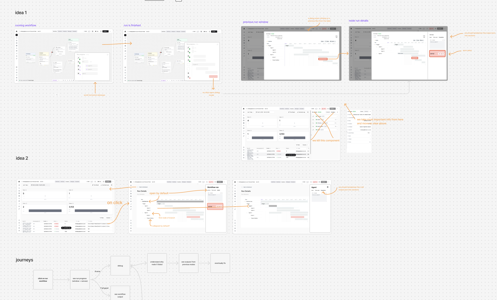
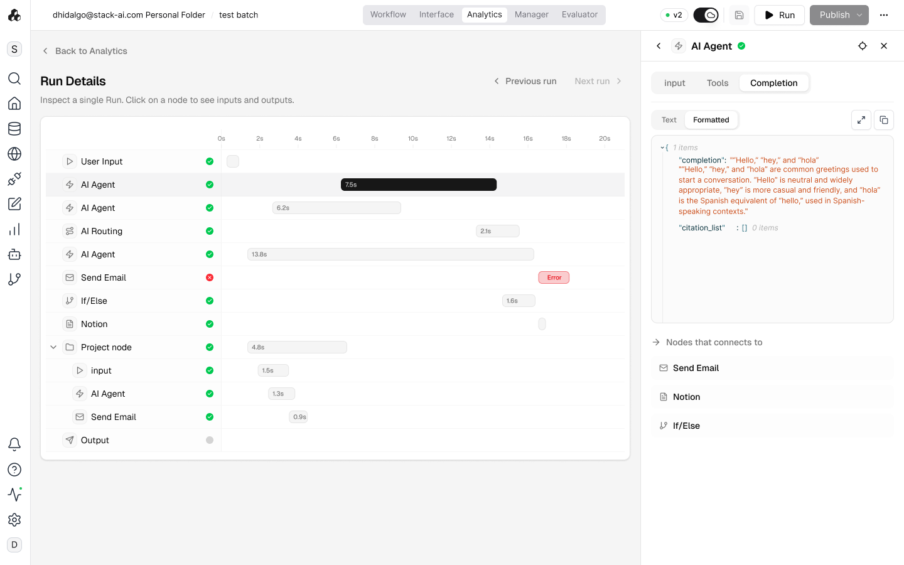

Two interconnected initiatives to transform StackAI's observability and quality story, org-wide analytics and continuous evaluation as a deployment gate.
Company
StackAI (YC W23)
Product
Enterprise AI workflow platform
Role
Product Designer
Year
2026
Personas
Executive Sponsors
Prove AI adoption + ROI across teams
Admins
Quickly monitor production health
Builders
Debug, iterate, and improve workflows
Internal Teams (StackAI)
Understand platform usage
Insights Analytics
Split across two surfaces with no org-wide view. Run logs buried under charts, missing caller context, and timezone bugs across the UI and exports.
Insights Evaluator
Barely used, manual test uploads and deployment friction. Competitors had moved to continuous, trace-native evaluation.
Conducted competitive research (Laminar, Langfuse, Arize Phoenix), mapped the full eval journey, iterated from lo-fi proposal → interactive prototype → stakeholder testing → engineering handoff.
Mapped the opportunity space in FigJam, ran multiple design iterations across global and project-level views, and validated with stakeholders before handing off specs to engineering.

Mapped the end-to-end journey from sandbox testing through production, covering build, publish, monitor, and continuous evaluation with human-in-the-loop gates.
Documented how builders run workflows, debug failures, and loop back through analytics to audit runs and fix issues.

Sketched run-level detail views, trace timelines, and error clustering patterns for the analytics experience.
Ran collaborative design sessions exploring multiple UI directions, annotating trade-offs across node editors, data tables, and evaluation workflows before converging on a shared concept.

Org-wide analytics with caller context, feedback filtering, and a simplified layout that puts debugging first.
Time-series metrics and workflow health across your org, success rates, latency percentiles, and error trends at a glance.

A run can be viewed in analytics, sent to an evaluator, and used to build a test dataset, one shared data model by design.
Analytics and evaluation are interconnected. A run can be viewed in analytics, sent to an evaluator, and used to build a test dataset, the two systems share a data model by design.
Executive sponsors and builders need separate views of the same data, not just more filters.
The evaluator existed but went unused because deploying it required infrastructure work. The new model makes signals zero-configuration.
When evals are deployment gates, defining "good" becomes a required step before shipping, not a retrospective.